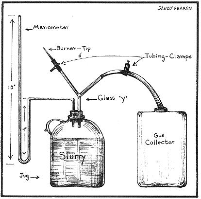
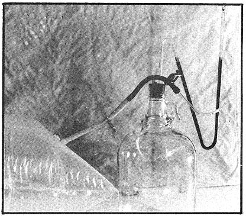

Ain't no doubt about it. . . if MOTHER's mail is any indication, an awful lot of folks want to know how to recycle home and farm wastes into high-quality fertilizer and methane gas for fuel. The only trouble is that-at this point-very few people in the United States and Canada know exactly how to go about the undertaking.
How big should a digester-generator be? What materials are best for its construction? Is the "batch" or "continuous feed" loading cycle most efficient? Can human waste be processed in a digester? Should the unit be above or below ground? Will the processor produce an odor problem? Can a house really be heated with the gas that is taken from decayed organic matter? Will the fuel power an internal combustion engine? Would it work better driving a steam powerplant? The questions pouring into our mailbox are endless.
Well, if you're a regular MOTHER reader, you know that-in an effort to pin down firm answers to such queries-we asked Ram Bux Singh (the world authority on farm and village-size methane generators) to help us build a prototype digester for MOTHER last summer. Singh's design-constructed almost entirely of recycled and scrap materials-was a marvel of low-cost, do-it-yourself engineering . . . and we had hoped to be able to pass some operational facts and figures along to you by now.
The only trouble is that the "expert" welder (no, we still won't tell you his name) who spent so much time telling us what a great job he was doing on the digester's water jacket . . . didn't do a great job at all. Matter of fact, it was an unbelievably lousy job and the whole generator is still-at this point-worthless for experimental purposes.
Come the first warm day in spring, though, we're gonna roll it out and fabricate a new water jacket for the critter . . . and, by fall, we should know a lot more than we do now about designing and building and operating a do-it-yourself methane gas station.
In the meantime, for all the folks who want to find out firsthand if decaying garbage will actually and truly and honestly and really produce burnable methane . . . here is Robert C. McMahon's modest experiment in methane gas production.
While you're waiting to build a digester large enough to process your farmstead waste into enough methane to heat the house . . . you may wish to try a simple, low (or zero) cost experiment that will familiarize you with the fuel's production and some of its characteristics.
Well, wish no more. Here's how to put together one of the simplest and least expensive methane production experiments of all. You'll need only a gallon cider jug, some sort of gas holder (I use a recycled, heavy-duty plastic bag) and-from the chemistry lab-some rubber tubing, a couple of tubing clamps, a two-hole rubber stopper, glass tubing and a glass "Y".
Your first step in constructing a mini-methane-generator will be to make a manometer. This is a U-shaped tube, partly filled with water, that will let you know when your little digester is producing gas, indicate the pressure of that gas and act as a safety valve (since excess pressure will blow the water out of the manometer). Any chemistry student should be able to show you the proper way to heat and form your glass tubing.
The four-inch manometer dimension shown in the drawing should be considered a maximum for both practical and safety reasons. Filling the tube with water to such a depth will give you eight inches of pressure . . . which is more than sufficient. Gas appliances usually operate on pressures of less than eight inches and there's no reason for you to risk blowing your jug apart with gas compressed beyond this amount.
Once your manometer is completed, you should make a "burner tip" by drawing out a piece of glass tubing in the approved manner (again, any chemistry student should be able to help you if you've never formed glass tubing before). I made my tip quite long as a precaution against the possibility of a backflash and advise you to do the same. Then attach the stretched-out burner to one arm of your glass "Y" with a short piece of rubber tubing on which a clamp is placed to act as a valve.
The other branch of the "Y" feeds directly to your gas collector through a longer section of rubber tubing (also fitted with a clamp). My collector is a polyethylene milk bag taken from a cafeteria-type dispenser. The cardboard cartons that fit inside such dispensers are thrown out after one use and you'll find that each box contains a bag-liner. Fully inflated, the bags are somewhat larger than a king-sized pillow. I washed one out, rolled it up to expel the air inside and hooked it to my "Y".
Now you're ready to place some manure in the jug. The best type appears to be a mixture of droppings and litter from a chicken barn but, if you can't get that, try something else. I used straight horse manure on my first run and it produced gas. The very most efficient formula, of course, is 30 parts of carbon to one part nitrogen . . . but you can think about that later. Our objective right now is to get your methane experiment moving.
Mix the manure with water to form a slurry and pour it into the jug. (The narrower the container's opening, the more humbling the experience!) Fill the jug to about four inches below the stopper (there'll be some initial foaming and you want to keep it out of the tubing).
The most efficient generation of methane takes place at 90 to 100°F and, if your slurry's temperature drops much below 80°, the gas production will be slow or nonexistent. You'll have to provide a sufficiently warm environment for your jug, then, if you want it to make gas. Bear in mind, though, that methane-carelessly handled-can explode . . . and take suitable precautions in setting up your apparatus. I placed my mini-digester near the furnace and its gascollector bag about five feet away. Enough said.
Start your generator working with all its valves (clamps) closed and, after a couple of days, the water being "pushed" up the long arm of the manometer will indicate that some pressure is beginning to build in the jug. This first production is mostly carbon dioxide, which will not burn. (Test the gas by holding an ignited match at the tip of the burner and opening its clamp. The amount of gas in the manometer is sufficient for such a trial, although-as stated-the carbon dioxide will not burn.)
Continue the tests until a match held at the burner tip does ignite the escaping gas. This may take a couple of weeks or more depending upon the acid conditions of the slurry in your jug. (EDITORS NOTE: See the Gobar Gas article on pages 28-31 of MOTHER NO. 12 for further discussions of acid balance, carbon to nitrogen ratio and other technical aspects of methane production.)
Eventually, incorrect acidity levels will correct themselves and your model generator will begin to produce methane. When you're satisfied that such production is underway, open the clamp to the gas collector and you're in business. Methane production-depending on temperature-should last for from one to three months.
And what can you do with the gas? You can burn it off through the burner tip as a graphic demonstration that-by golly!-decomposed organic matter really does produce usable fuel. The quantity is too small for much else. To increase the pressure of the escaping gas (and, thereby, the spectacular nature of the resulting flame), place one or more bricks on the collector bag when you try this stunt. The manometer, of course, will faithfully indicate the pressure your gas reaches during such a demonstration.
Once the thrill of watching the flame passes, disconnect the collector bag, take it outside and expel the remaining methane. The residue left in the jug is an excellent fertilizer and you can use the liquid and some of the solids to seed your next batch of waste (and thereby hasten its production of gas).
Even though I haven't personally tried them yet, I can suggest a couple of refinements on the above experiment. If you have a fish aquarium heater available, you might try putting your jug in a bucket of water warmed by the element. This would be a significant improvement in maintaining the digesting slurry at optimum working temperature. You can also improve the burning qualities of the resulting methane by bubbling it through a limewater solution to remove carbon dioxide and passing it over ferric oxide (rust) to remove hydrogen sulfide.
Although the above experiment is imprecise and yields only a small quantity of methane, it will familiarize you with the digestion process and, possibly, encourage you to investigate (if you haven't already) the construction of larger-scale generators that will produce usable quantities of gas. The independent production of energy is a worthwhile goal.
|
 |
 |
|